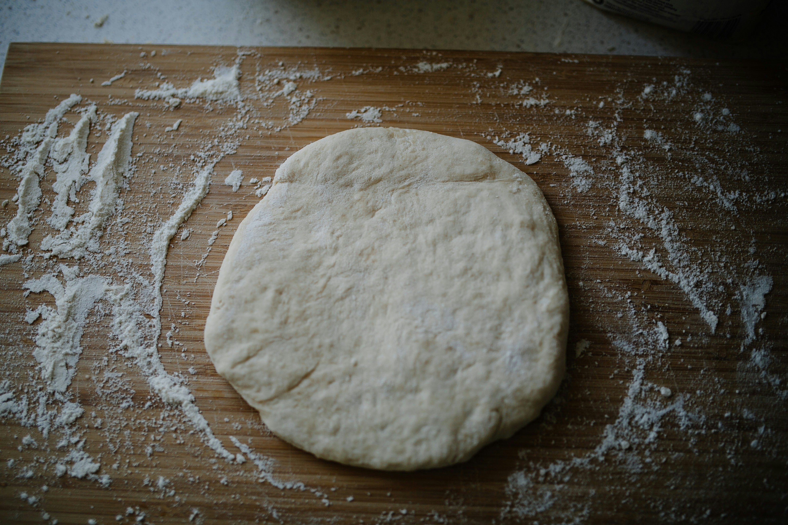

Skyr Dough
Photo by Phil Hearing on Unsplash
Description
A very quick and easy protein-packed dough, perfect for pizza!
Ingredients
- 200g plain flour
- 7 g baking powder
- 1/2 tsp salt
- 250g plain skyr
Steps
- Sift flour into a bowl. Add baking powder and salt.
- Thoroughly mix dry ingredients.
- Add skyr and mix everything by hand.
- Knead until the dough is one smooth ball.